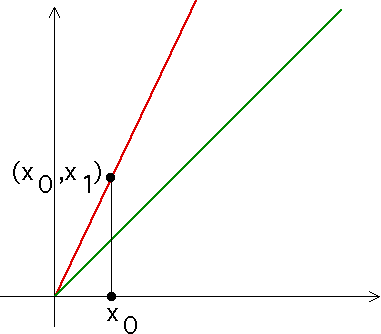

| Graphical iteration is a geometric process for visualizing the sequence of values |
| x0, x1 = f(x0), x2 = f(x1), x3 = f(x2), ... |
| Briefly, we use an alternating collection of vertical and horizontal segments between the graph of f and the diagonal line. |
|  |
| Click the picture for the next step |
Return to dynamics and number theory.